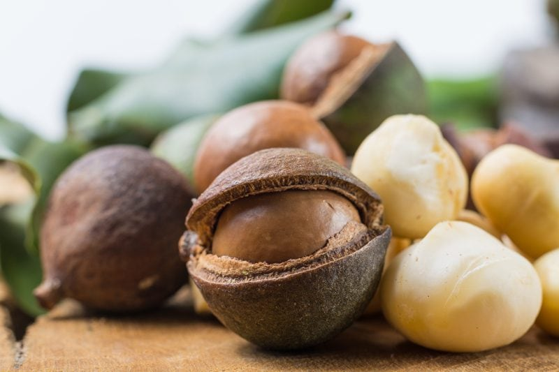
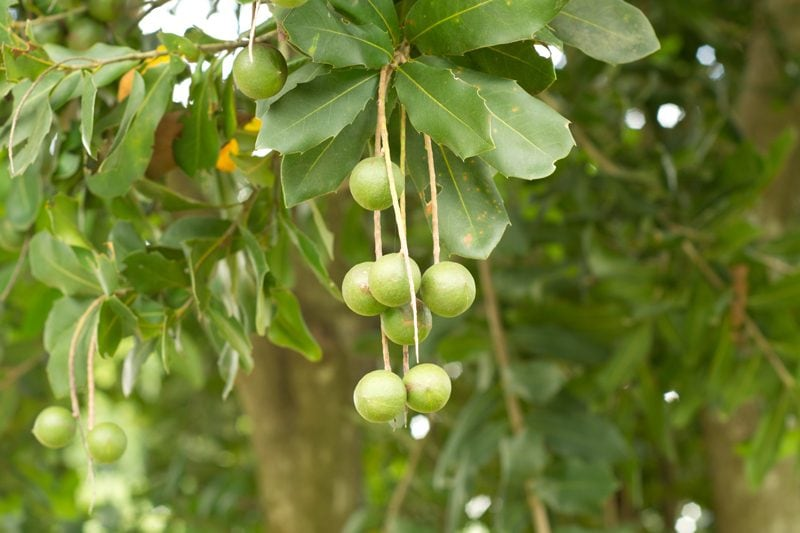
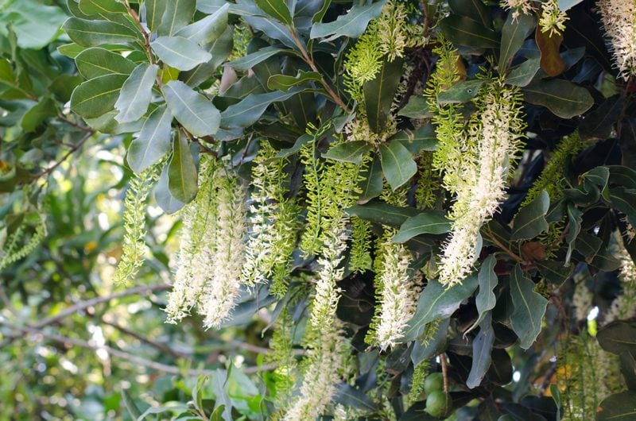

Macadamia Nuts – A Hard Nut to Crack
Macadamia nuts have a very hard seed coat enclosed in a green husk that splits open as the nut matures. It holds a creamy white kernel containing up to 80% oil, which accounts for their rich, buttery flavor. It takes some serious muscle to extract the edible nut from its shell: 300 pounds of pressure per square inch to be exact, making it the hardest nut in the world to crack. And here my husband thought that I was a “hard nut to crack.”

The magnificent macadamia tree is the source of one of the more expensive, but richly flavored nuts prized for their sweet, soft meat. These large bushy trees are warm region plants only since they cannot tolerate any sort of freeze and produce the best yields in areas with high humidity and rainfall. Most of us associate macadamia nuts with Hawaii, but they also grow in some countries in Latin America, Africa, and Asia. In the continental United States, trees are found in California and Florida.

There is a ranch in Hawaii where 300,000-plus trees grow in lava rock with NO organic soil. To me… that is sort of mind-blowing… lava rock = growing trees?! Love learning this stuff!
Once trees have been planted, it takes four to five years for them to start producing, but by year six they should be well established and will continue to produce wonderful macadamia nut crops. But if a tree is started in the ground from a seed, it will take up to twelve years to start producing nuts. Now, who has time for that?

Pollination and Flowering
Macadamia flowers are called raceme which is a flower cluster that has up to 500 flowers on them. The flowering of the trees occurs over a four to six month period. The nuts mature at different times over the course of the year and since they are biennial, they alternate years of light and heavy crops. The trees require pollination during flowering, so beehives are usually imported into the orchards.
Harvesting
There are several varieties of macadamia nuts such as Cates, Beaumont, James, and others. Depending on the variety, the nuts may drop when they are ready for harvesting, or you may need to pick them off the trees.
Husking
Macadamia nuts are manually collected when their skin begins to crack and have fallen from the tree. From there the husk must be removed within 24 hours of harvest to prevent mildew. If you leave the husks on, the nuts will soon develop a mildew which will quickly affect the color of the shell and give the nut meats a musty taste. Also, the longer you leave the husks on, the harder they are to get off as they dry out and become hard.
Air Drying
When the nuts are first harvested, they have a high moisture content, and the natural oils have not yet developed. The nuts need to be air dried, on drying racks, in the shade, for at least two weeks to reduce the moisture content and to allow the oils to develop. After this, the nuts are ready to be delivered to the warehouse, or your home for drying.
Oven Drying
At the warehouse, the nuts are dried in a walk-in dryer, for at least another 48 hours up to 110 degrees (F). The shell will become brittle, so it is easier to crack the shell without damaging the nut meat. If you are lucky enough to get them after air drying, you can use a kitchen oven at the lowest warm setting, or a food dehydrator at the nut setting, around 104 degrees (F), for two to three days. Take a few nuts after 48 hours and test them by cracking them open and biting into them to see if they are crunchy. If they are still a little chewy, give them another 24 hours or so.
Every Part of the Macadamia Tree is Used
Husk and Shell
- The outer husk is combined with other organic matter, making an excellent mulch around young trees.
- The hard shell sustains high temperatures when burning and is mostly used as a fuel for firing furnaces in local industries.
- The shell is ground to a fine powder the resulting granules are extremely hard. This powder is then used as an industrial abrasive and is superior to sand for sandblasting. It is even marketed by the cosmetics industry as the active ingredient in facial skin scrub.
Macadamia Oil
- Some of the health benefits of macadamia nut oil include its ability to lower triglyceride levels, improve heart health, boost energy levels, and improve your digestive process. To learn more, click (here).
- The oil is notably superior to all other vegetable oils, such as olive oil, having the highest percentage of monounsaturated fats, and a higher smoke point.
- Macadamia nut oil absorbs into the skin fast, so it is a very desirable massage oil. Add a few drops of your favorite essential oil and pamper yourself.
Own a Dog?
Macadamias are toxic to dogs. Ingestion may result in macadamia toxicity marked by weakness and hind limb paralysis with the inability to stand, occurring within 12 hours of ingestion.
[29] Depending on the quantity ingested and size of the dog, symptoms may also include muscle tremors, joint pain, and severe abdominal pain. In high doses of toxin, opiate medication may be required for symptom relief until the toxic effects diminish, with full recovery usually within 24 to 48 hours. (
source)
© AmieSue.com